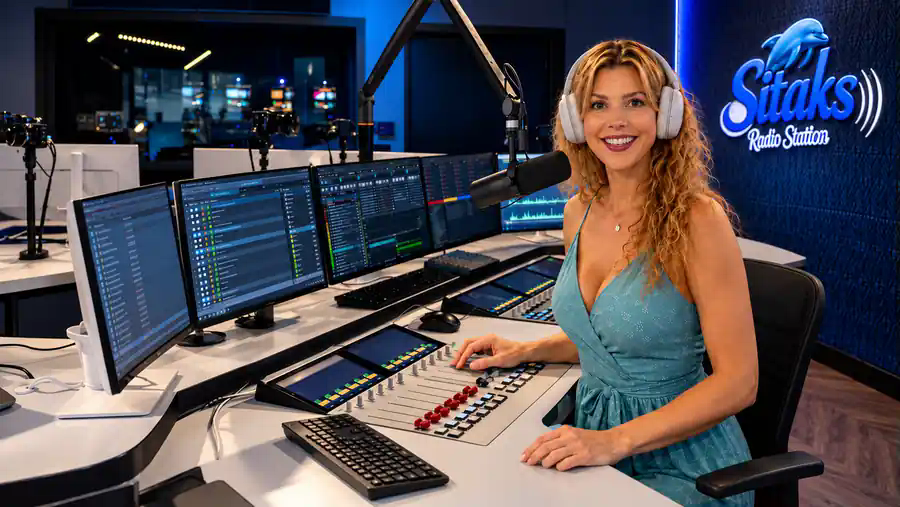

04 / Audio & Broadcasting — webradio
De wereld van radio.
SITAKS Radio Station — studio, uitzendingen en audio.
SITAKS Radio Station
Luister live.
Luister hier zonder login naar SITAKS Radio Station. Druk op afspelen om de liveverbinding te starten.
SITAKS — LIVEKlaar om live te luisteren. Druk op afspelen.


Productie & audiobibliotheek.
Jingles, voice-overs, sounddesign en fragmenten.
Open de audiobibliotheek ↗Peter van Aelst
Radio, programma's en presentatie.